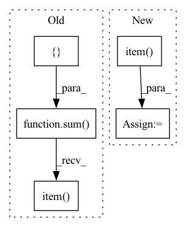

Pattern ID :15237

Before Change
model.train()
losses = []
for batch_data in train_loader:
optimizer.zero_grad()
batch_data = batch_data.to(device)
out = model(batch_data)
if energy_and_force:
force = -grad(outputs=out, inputs=batch_data.pos, grad_outputs=torch.ones_like(out),create_graph=True,retain_graph=True)[0]
e_loss = loss_func(out, batch_data.y.unsqueeze(1))
f_loss = loss_func(force, batch_data.force)
loss = e_loss.sum() + p/(3*num_atom) * f_loss.sum()
else:
loss = loss_func(out, batch_data.y.unsqueeze(1)).sum()
loss.backward()
optimizer.step()
losses.append(loss)
return sum(losses).item()
def val(self, model, val_loader, energy_and_force, num_atom, p, loss_func, metric_func, device):
r
The script for validation.
After Change
loss = loss_func(out, batch_data.y.unsqueeze(1))
loss.backward()
optimizer.step()
loss_accum += loss.detach().cpu().item()
return loss_accum / (step + 1)
def val(self, model, valid_loader, energy_and_force, p, loss_func, evaluation, device):
r
In pattern: SUPERPATTERN
Frequency: 3
Non-data size: 5
Instances
Fragment ID: 51430469
Project Name: divelab/dig
Commit Name: 0a4f978887c1b02d27f542731324450ef8e80ab1
Time: 2021-05-03
Author: wlmei3710@gmail.com
File Name: dig/threedgraph/method/run.py
M Class Name: run
N Class Name: run
M Method Name: train(8)
N Method Name: train(9)
M Parent Class:
N Parent Class:
M File Name: dig/threedgraph/method/run.py
N File Name: dig/threedgraph/method/run.py
M Start Line: 94
M End Line: 125
N Start Line: 116
N End Line: 131
'>
Before Change
// Make prediction
out = self._model(data, mask)
loss_bbox, loss_giou, loss_cls = self._criterion(out, targets)
loss = sum(
[
loss_bbox * self._train_config["loss_coefs"]["bbox_loss_coef"],
loss_giou * self._train_config["loss_coefs"]["giou_loss_coef"],
loss_cls * self._train_config["loss_coefs"]["cls_loss_coef"],
]
)
// Evaluate validation predictions based on metric
pred_boxes, pred_classes, pred_scores = inference(out)
self._evaluator.add(
pred_boxes=pred_boxes,
pred_classes=pred_classes,
pred_scores=pred_scores,
gt_boxes=[target["boxes"].detach().cpu().numpy() for target in targets],
gt_classes=[target["labels"].detach().cpu().numpy() for target in targets]
)
loss_agg += loss.item()
loss_bbox_agg += loss_bbox.item()
loss_giou_agg += loss_giou.item()
loss_cls_agg += loss_cls.item()
After Change
loss_agg += loss_abs.item()
loss_bbox_agg += loss_dict["bbox"].item()
loss_giou_agg += loss_dict["giou"].item()
loss_cls_agg += loss_dict["cls"].item()
loss = loss_agg / len(self._val_loader)
loss_bbox = loss_bbox_agg / len(self._val_loader)
loss_giou = loss_giou_agg / len(self._val_loader)
'>
Fragment ID: 51430473
Project Name: bwittmann/transoar
Commit Name: b168360cfaa2ea2a6bf4d82849fc82381329de4a
Time: 2021-12-02
Author: bastian.wittmann@tum.de
File Name: transoar/trainer.py
M Class Name: Trainer
N Class Name: Trainer
M Method Name: _validate(2)
N Method Name: _validate(2)
M Parent Class:
N Parent Class:
M File Name: transoar/trainer.py
N File Name: transoar/trainer.py
M Start Line: 102
M End Line: 142
N Start Line: 103
N End Line: 141
'>
Before Change
// Make prediction
out = self._model(data, mask)
loss_bbox, loss_giou, loss_cls = self._criterion(out, targets)
loss = sum(
[
loss_bbox * self._train_config["loss_coefs"]["bbox_loss_coef"],
loss_giou * self._train_config["loss_coefs"]["giou_loss_coef"],
loss_cls * self._train_config["loss_coefs"]["cls_loss_coef"],
]
)
self._optimizer.zero_grad()
loss.backward()
// Clip grads to counter exploding grads
max_norm = self._train_config["clip_max_norm"]
if max_norm > 0:
torch.nn.utils.clip_grad_norm_(self._model.parameters(), max_norm)
self._optimizer.step()
loss_agg += loss.item()
loss_bbox_agg += loss_bbox.item()
loss_giou_agg += loss_giou.item()
loss_cls_agg += loss_cls.item()
After Change
loss_agg += loss_abs.item()
loss_bbox_agg += loss_dict["bbox"].item()
loss_giou_agg += loss_dict["giou"].item()
loss_cls_agg += loss_dict["cls"].item()
loss = loss_agg / len(self._train_loader)
loss_bbox = loss_bbox_agg / len(self._train_loader)
loss_giou = loss_giou_agg / len(self._train_loader)
'>
Fragment ID: 51430475
Project Name: bwittmann/transoar
Commit Name: b168360cfaa2ea2a6bf4d82849fc82381329de4a
Time: 2021-12-02
Author: bastian.wittmann@tum.de
File Name: transoar/trainer.py
M Class Name: Trainer
N Class Name: Trainer
M Method Name: _train_one_epoch(2)
N Method Name: _train_one_epoch(2)
M Parent Class:
N Parent Class:
M File Name: transoar/trainer.py
N File Name: transoar/trainer.py
M Start Line: 42
M End Line: 82
N Start Line: 45
N End Line: 83